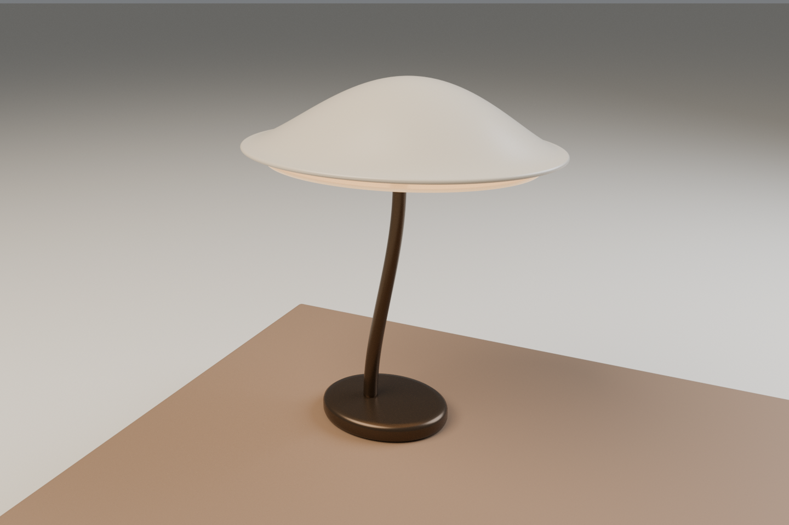

01 / 桌面关系留白
留白，
是第三件物品。
我们把两轮独立造物，放回一个可使用的尺度里。
暮灯退到左侧，给视线一个高点；折页靠近右手，把阅读面抬起。两者没有沿中轴摆成陈列，而是让中间那块空处保持可用。
这不是为两件模型补一张背景。桌面本身就是目录：从整体的疏密，走近光的层次，再走近折面的支撑。
- 两个原件
- Poise × Folio
- 同一尺度
- 1 unit = 1 metre
- 不改变
- 原始几何与 PBR 材质
02 / 光的层次暮灯
先安放光，
再安放物。
罩缘、支点、桌面——一条向下的视觉次序。

Poise 的宽罩与细杆，在桌上建立一个安静的重心。浅色罩面接住环境光，深色杆与底座把轮廓收住；离桌面最近的部分，不再争夺视线。
此处讨论的是视觉上的照明层次，不是照度模拟。原件中的发光材质予以保留；不同渲染器的光照与色调映射不会完全相同。
- 原件
- 005 · Poise
- 总高
- 477 mm
- 罩面横向包围
- 416.74 mm
03 / 面的结构折页
一道折线，
抬起阅读。
支撑不是附加的部件，而是同一片面的继续。

Folio 把平板的直线变成一条往返路径。前托承接物件，主面建立阅读角度，背面折回桌上。侧缘让“怎样站住”成为可读的形状，而不依赖拆解图。
靠近它时，镜头选择能同时读到正面和回折的一侧。我们不再让材料切换主导观看；相机的位置，服务于构造的问题。
- 原件
- 006 · Folio
- 宽 / 高
- 249.97 / 183.08 mm
- 设计厚度
- 3 mm